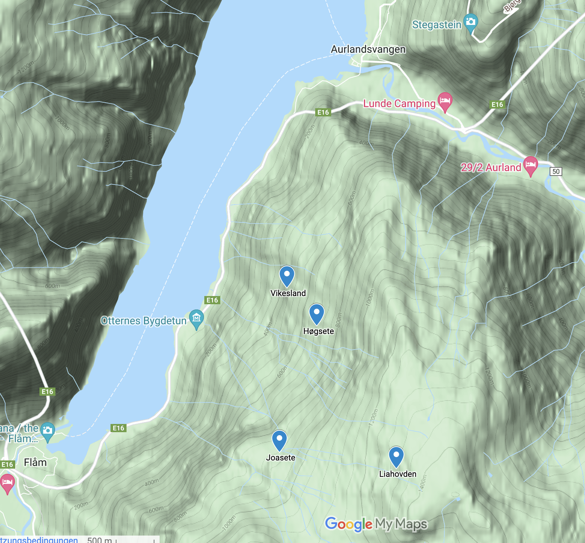

2 Alpine ecosystems
The PFTC courses study trait-based approaches in alpine grassland ecosystems around the world. We have chosen this ecosystem because they are impacted more strongly by climate change which cause important issues of great societal consequence, and because we have research backgrounds in this general field and system. By focusing on the same ecosystem in all courses, enables comparative approaches by combining data from the different PFTC courses. And also, everyone knows grasses are the coolest plants.
2.1 Alpine ecosystems in Western Norway (PFTC6)
The PFTC6 will be held in Aurland in the fjords of Western Norway (see Figure 2.1). We will be working on an elevational gradient that ranges between 500 and 1300 m a.s.l.

The dominant vegetation types in this area are grasslands, pine and birch forests with bilberry understory, and heathland. The main land use in this area is grazing by sheep and goats.
During the course, we will mainly focus on grassland ecosystems (see Figure 5.4 (a) and Figure 5.4 (b)).